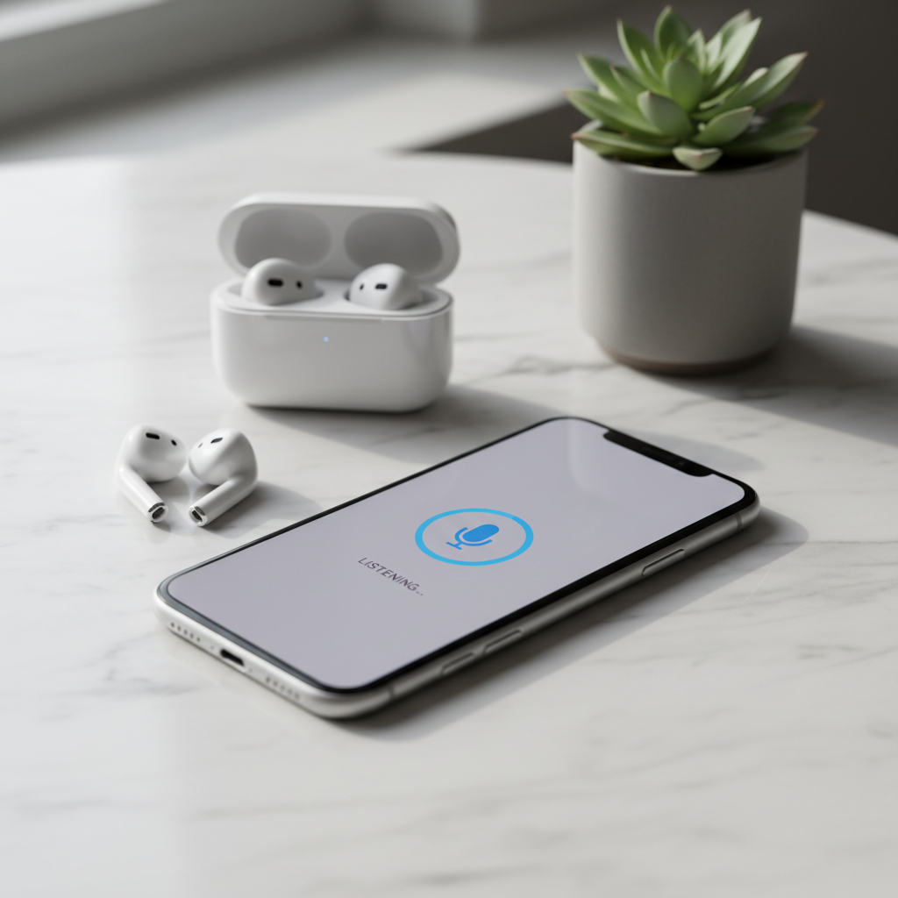

OpenAI와 NVIDIA가 최소 10기가와트 규모의 AI 인프라 구축을 위한 100조 원대 전략적 파트너십을 체결하며 빅테크 간 초대형 동맹 시대를 열었습니다. 오픈소스 AI 에이전트 OpenClaw는 GitHub 역사상 가장 빠른 성장 기록을 세우며 오픈소스 커뮤니티의 저력을 증명했습니다. Apple은 Google Gemini 기반 Siri 2.0 출시를 앞두고 있으며, Atlassian은 AI 전환을 위해 전 직원의 10%를 감축하는 대규모 구조조정에 나섰습니다. 한편 미국에서는 AI 투명성 의무화 법안이 속도를 내고 있습니다.
OpenAI and NVIDIA have signed a landmark strategic partnership to deploy at least 10 gigawatts of AI infrastructure, valued at up to $100 billion, ushering in an era of mega-alliances between Big Tech companies. Open-source AI agent OpenClaw set the fastest growth record in GitHub history, while Apple prepares to launch its Gemini-powered Siri 2.0. Atlassian has cut 10% of its workforce to pivot toward AI, and the US is accelerating AI transparency legislation.
OpenAI와 NVIDIA가 차세대 AI 인프라 구축을 위한 전략적 파트너십 의향서(LOI)를 체결했습니다. 이번 합의에 따라 NVIDIA는 OpenAI에 최소 10기가와트 규모의 시스템을 공급하며, 시스템 배치에 따라 최대 1,000억 달러(약 130조 원)를 투자할 계획입니다. 첫 1기가와트 시스템은 2026년 하반기에 차세대 NVIDIA Vera Rubin 플랫폼을 기반으로 배치됩니다.
OpenAI and NVIDIA have signed a letter of intent for a strategic partnership to build next-generation AI infrastructure. Under the agreement, NVIDIA will supply at least 10 gigawatts of systems to OpenAI and invest up to $100 billion as the systems are deployed. The first gigawatt of systems will be deployed in the second half of 2026 on the next-generation NVIDIA Vera Rubin platform.
이 파트너십의 규모는 역대 기술 산업 협력 중 최대 수준입니다. Jensen Huang CEO는 OpenAI에 대한 300억 달러 투자가 "마지막이 될 수 있다"고 밝히면서도 양사의 관계가 더욱 깊어지고 있음을 시사했습니다. 동시에 OpenAI는 직원 수를 약 8,000명으로 거의 두 배 늘릴 준비를 하고 있어, AI 산업의 양적 확장이 본격화되고 있습니다.
The scale of this partnership is the largest in technology industry history. CEO Jensen Huang indicated that NVIDIA's $30 billion investment in OpenAI "might be the last," while signaling the deepening relationship between the two companies. Meanwhile, OpenAI is reportedly preparing to nearly double its workforce to approximately 8,000 employees, marking the quantitative expansion of the AI industry.
핵심 포인트: 10기가와트는 대형 원자력발전소 약 10기에 해당하는 전력입니다. AI 인프라가 이제 국가급 에너지 프로젝트와 동일한 규모로 성장하고 있음을 의미합니다.
Key Point: 10 gigawatts is equivalent to approximately 10 large nuclear power plants. This signals that AI infrastructure is now growing to the scale of national-level energy projects.
오스트리아 개발자 Peter Steinberger가 만든 오픈소스 AI 에이전트 플랫폼 OpenClaw가 GitHub 역사상 가장 빠르게 성장한 프로젝트가 되었습니다. 2025년 11월 'Clawdbot'이라는 이름으로 출발한 이 프로젝트는 2026년 3월 현재 25만 개 이상의 GitHub 스타를 기록하며, Linux 운영체제가 수년에 걸쳐 도달한 이정표를 단 4개월 만에 돌파했습니다.
OpenClaw, an open-source AI agent platform created by Austrian developer Peter Steinberger, has become the fastest-growing project in GitHub history. Starting as 'Clawdbot' in November 2025, the project has surpassed 250,000 GitHub stars by March 2026, breaking a milestone that took the Linux operating system years to achieve in just four months.
OpenClaw의 성장은 빅테크만의 전유물이었던 AI 에이전트 시장에 균열을 일으키고 있습니다. Tencent는 자사 슈퍼앱 WeChat에 OpenClaw 기반 AI 제품군을 통합했고, NVIDIA는 GTC 2026에서 OpenClaw 커뮤니티를 위한 NemoClaw 스택을 발표했습니다. 다만 보안 연구자들은 4만 개 이상의 OpenClaw 인스턴스가 공개 인터넷에 노출되어 있으며, 60% 이상에서 해킹 취약점이 발견되었다고 경고하고 있습니다.
OpenClaw's growth is cracking open the AI agent market that was once the exclusive domain of Big Tech. Tencent has integrated OpenClaw-based AI products into its super-app WeChat, and NVIDIA announced the NemoClaw stack for the OpenClaw community at GTC 2026. However, security researchers warn that over 40,000 OpenClaw instances are exposed on the public internet, with over 60% having exploitable vulnerabilities.
핵심 포인트: OpenClaw는 AI 에이전트의 '민주화'를 상징하지만, 급속한 확산에 비해 보안 인프라가 따라가지 못하고 있습니다. 중국 정부는 이미 국가 기관에서의 사용을 제한했습니다.
Key Point: OpenClaw symbolizes the 'democratization' of AI agents, but security infrastructure hasn't kept pace with its rapid adoption. China has already restricted its use in government agencies.

Apple이 Google의 1.2조 파라미터 Gemini 모델을 기반으로 완전히 재설계된 Siri 2.0을 곧 공개합니다. iOS 26.5 베타에서 3월 말 첫 선을 보일 예정이며, Siri가 이메일, 메시지, 캘린더 등의 맥락을 분석해 사용자의 의도를 더 깊이 이해하는 방향으로 진화합니다. Apple의 Private Cloud Compute를 통해 프라이버시를 유지하면서 클라우드 AI의 성능을 활용하는 하이브리드 구조가 핵심입니다.
Apple is about to unveil a completely redesigned Siri 2.0 powered by Google's 1.2 trillion parameter Gemini model. Set to debut in the iOS 26.5 beta by late March, the new Siri will analyze context from emails, messages, and calendar events to more deeply understand user intent. The hybrid architecture leverages cloud AI performance while maintaining privacy through Apple's Private Cloud Compute.
수차례 연기 끝에 도달한 이번 출시는 Apple에게 AI 경쟁에서의 신뢰 회복이 걸린 중요한 순간입니다. 2025년 초 Google과 체결한 다년간 전략적 제휴가 기술적 기반이 되었으나, 내부 테스트에서 일관성과 통합 관련 성능 문제가 발견되면서 일부 기능은 5월 업데이트나 9월 iOS 27까지 연기될 수 있습니다. 그럼에도 복잡한 크로스앱 작업을 처리할 수 있는 차세대 음성 AI의 기준점을 제시할 것으로 기대됩니다.
After multiple delays, this launch represents a critical moment for Apple to restore confidence in the AI race. The multi-year strategic alliance with Google signed in early 2025 provides the technical foundation, but performance issues with consistency and integration discovered during internal testing may push some features to the May update or even iOS 27 in September. Nevertheless, it is expected to set the benchmark for next-generation voice AI capable of handling complex cross-app tasks.
핵심 포인트: Apple-Google Gemini 통합은 경쟁사가 아닌 협력사로서의 새로운 관계를 보여줍니다. 프라이버시를 포기하지 않으면서 최고 수준의 AI를 제공하려는 Apple의 전략이 시험대에 오릅니다.
Key Point: The Apple-Google Gemini integration showcases a new relationship as partners rather than competitors. Apple's strategy of delivering top-tier AI without compromising privacy faces its ultimate test.
협업 소프트웨어의 대명사 Atlassian이 전 직원의 약 10%를 감축하는 대규모 구조조정을 단행했습니다. 동시에 기존 CTO를 교체하고 AI 중심의 새로운 CTO 2명을 임명하며, 회사의 기술적 방향을 AI로 전면 재편하겠다는 의지를 명확히 했습니다. Jira, Confluence 등 핵심 제품에 AI 에이전트 기능을 깊숙이 통합하는 것이 목표입니다.
Atlassian, the collaboration software giant, has laid off roughly 10% of its global workforce. Simultaneously, the company replaced its CTO and appointed two new AI-focused CTOs, clearly signaling its intent to fundamentally redirect its technical direction toward AI. The goal is to deeply integrate AI agent capabilities into core products like Jira and Confluence.
Atlassian의 이번 결정은 AI가 단순한 신기능 추가가 아니라 기업의 존재 방식 자체를 바꾸는 전환점임을 보여줍니다. Dreamer AI 스타트업 팀이 통째로 Meta의 Superintelligence Labs에 합류하는 등 AI 인재 확보 전쟁도 격화되고 있습니다. 기존 소프트웨어 기업이 AI-First 기업으로 탈바꿈하려면 조직, 인력, 문화 전반의 혁신이 불가피합니다.
Atlassian's decision demonstrates that AI is not merely a feature addition but a turning point that transforms how companies fundamentally operate. The AI talent war is intensifying, with the entire Dreamer AI startup team joining Meta's Superintelligence Labs. For existing software companies to transform into AI-first enterprises, comprehensive innovation across organization, talent, and culture is inevitable.
핵심 포인트: AI 전환은 더 이상 선택이 아닙니다. Atlassian처럼 수십 년간 성공해온 기업조차 CTO를 교체하고 조직을 재편하고 있습니다. AI-First가 아니면 도태되는 시대입니다.
Key Point: AI transformation is no longer optional. Even companies with decades of success like Atlassian are replacing CTOs and restructuring. It's an era where failing to be AI-first means falling behind.
미국 일리노이주의 HB 4988 법안이 3월 24일 하원 소비자보호위원회 청문회에 상정됩니다. 이 법안은 소비자 사기 및 기만적 영업 관행 방지법을 개정하여, 생성형 AI 운영자에게 AI 사용 사실을 명시적으로 고지하도록 의무화하는 내용을 담고 있습니다. 사용자가 AI와 상호작용하고 있다는 사실을 알 권리를 보장하는 것이 핵심입니다.
Illinois HB 4988 is scheduled for hearing before the House Consumer Protection Committee on March 24. The bill amends the Consumer Fraud and Deceptive Business Practices Act to require generative AI operators to display explicit notifications of AI use. The core focus is ensuring users' right to know when they are interacting with AI.
AI 투명성 규제는 미국 전역으로 확산되는 추세입니다. 이미 백악관은 AI 규제 샌드박스 설립과 연방 데이터 공개를 포함한 국가 AI 정책 프레임워크를 발표한 바 있습니다. AI 광고 시장이 2026년 570억 달러(63% 성장)에 달할 것으로 전망되는 가운데, 소비자가 AI 생성 콘텐츠와 인간이 만든 콘텐츠를 구별할 수 있어야 한다는 요구가 커지고 있습니다. EU의 AI 딥페이크 금지법 추진과도 맥을 같이합니다.
AI transparency regulations are spreading across the US. The White House has already released a national AI policy framework that includes establishing regulatory sandboxes and making federal data publicly accessible. With the AI advertising market projected to reach $57 billion in 2026 (63% growth), demands are growing for consumers to be able to distinguish between AI-generated and human-created content. This aligns with the EU's push for AI deepfake prohibition legislation.
핵심 포인트: AI 규제가 '할 것인가'에서 '어떻게 할 것인가'로 전환되고 있습니다. 일리노이주 HB 4988은 실용적 AI 규제의 모델 케이스가 될 수 있습니다.
Key Point: AI regulation is shifting from 'whether to regulate' to 'how to regulate.' Illinois HB 4988 could become a model case for practical AI regulation.
OpenAI-NVIDIA의 100조 원 파트너십은 AI 경쟁의 본질이 모델이 아닌 인프라에 있음을 확인시켜줍니다. 컴퓨트, 자본, 플랫폼을 장악한 기업이 앞서가고 있습니다.
The $100B OpenAI-NVIDIA partnership confirms that the essence of AI competition lies in infrastructure, not models. Companies controlling compute, capital, and platforms are pulling ahead.
OpenClaw의 폭발적 성장은 빅테크 독점에 대한 오픈소스 커뮤니티의 강력한 응답입니다. 다만 보안 문제는 확산 속도만큼 시급합니다.
OpenClaw's explosive growth is the open-source community's powerful response to Big Tech monopolies. However, security issues are as urgent as the speed of adoption.
Apple-Google, OpenAI-NVIDIA — 빅테크 기업들이 독자 노선 대신 전략적 동맹을 선택하고 있습니다. AI 시대의 승자는 혼자가 아닌 최고의 파트너를 찾는 기업입니다.
Apple-Google, OpenAI-NVIDIA — Big Tech companies are choosing strategic alliances over going it alone. In the AI era, winners are those who find the best partners, not those who go solo.
AI 투명성 법안이 청문회 단계에 진입하며 실질적 규제 시대가 열리고 있습니다. 기업들은 AI 활용 고지 체계를 사전에 준비해야 합니다.
With AI transparency bills reaching the hearing stage, the era of substantive regulation is opening. Companies need to prepare AI usage disclosure systems in advance.